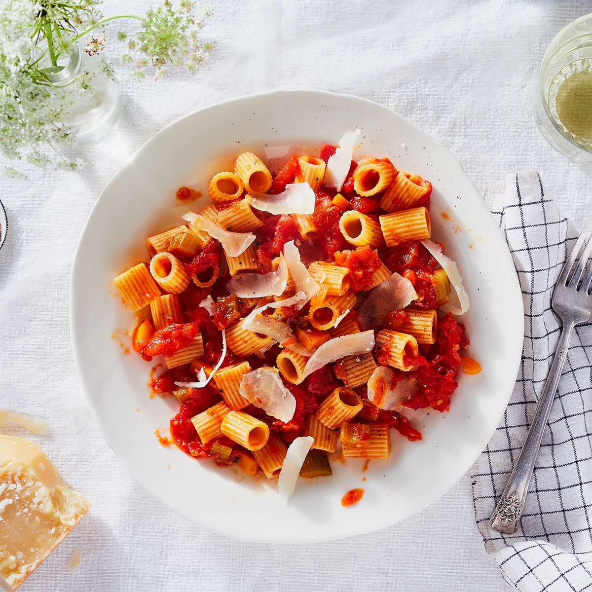

Marcella Hazan's Tomato Sauce

Description
This velvety, buttery tomato sauce requires little effort and with big reward.
If you live somewhere where you can get fresh, sweet tomatoes - you're in luck, because this recipe is about to change your life.
Otherwise, fear not, for canned tomatoes will come to your rescue and you, too, can enjoy all the goodness this sauce has to offer.
Ingredients
- 2 cups tomatoes, with their juices (either fresh tomatoes or a 28-oz can of San Marzano whole peeled tomatoes)
- 5 tbsp butter
- 1 onion, peeled and cut in half
- Salt
Instructions
- Combine the tomatoes, their juices, the butter and the onion halves in a saucepan. Add a pinch or two of salt.
- Place over medium heat and bring to a simmer. Cook, uncovered, for about 45 minutes. Stir occasionally, mashing any large pieces of tomato with a spoon. Add salt as needed.
- Discard the onion before tossing the sauce with pasta. This recipe makes enough sauce for a pound of pasta.
- Optional (but recommended): Top with fresh basil and shredded parmesan.